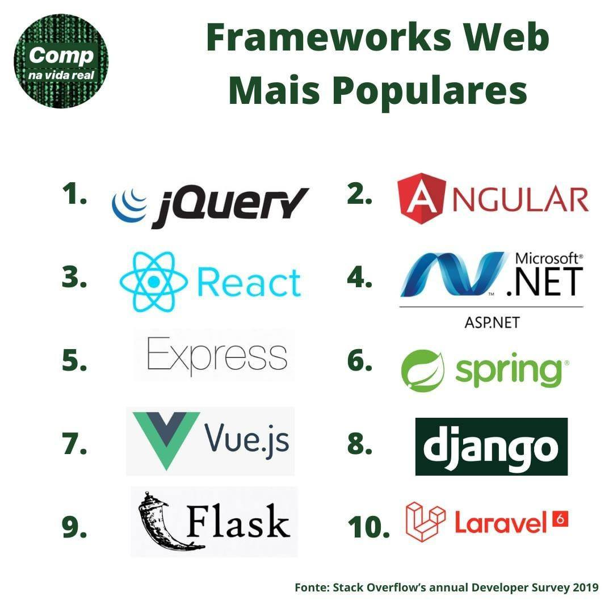
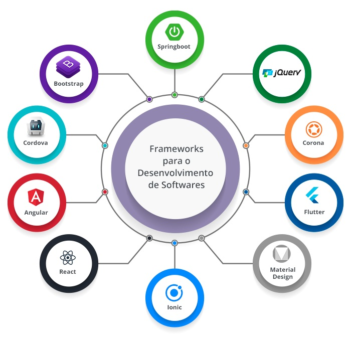

Disciplinas
FUNDAMENTOS DE WEB-T01-2024-2. Concluído
Materiais
Vídeo 3 - Formação Profissional em Computação - Bibliotecas e Frameworks sendProf° ministrante: Alessandra Alaniz Macedo. (UNIVESP)
Conteúdo
Bibliotecas e Frameworks
Bibliotecas e Frameworks.
https://encrypted-tbn2.gstatic.com/images?q=tbn:ANd9GcR5r4B8e7cMF7_ZT7JBXAL108TcZP6RufNkl9yaYsqmS7Yzwk38
1. jQuery
Vantagens:Simplifica a manipulação do DOM e a criação de animações.
Suporte a todos os navegadores.
Facilita o uso de AJAX e chamadas assíncronas.
Desvantagens:Pode tornar o código pesado e difícil de manter em projetos grandes.
Menos relevante com o avanço de frameworks modernos como React e Angular.
2. Angular
Vantagens:Framework completo para desenvolvimento de aplicações complexas de uma página (SPA).
Componentes reutilizáveis e rica documentação.
Suporte a TypeScript, que melhora a segurança de tipos.
Desvantagens:Curva de aprendizado íngreme.
Aplicações podem se tornar pesadas se não forem bem otimizadas.
3. React
Vantagens:Flexível e focado apenas na interface (view).
Virtual DOM oferece melhor performance.
Grande comunidade e vasta quantidade de bibliotecas.
Desvantagens:Requer integração de outras bibliotecas para funcionalidades como roteamento ou gerenciamento de estado.
A rápida evolução pode tornar bibliotecas e práticas obsoletas.
4. Microsoft .NET (ASP.NET)
Vantagens:Suporte robusto para desenvolvimento web e corporativo.
Integração perfeita com outros produtos da Microsoft.
Segurança e desempenho, especialmente para aplicações empresariais.
Desvantagens:Licenciamento do Windows e outras ferramentas da Microsoft podem ser caros.
Curva de aprendizado alta para desenvolvedores novos no ecossistema Microsoft.
5. Express (Node.js Framework)
Vantagens:Simples e minimalista, permitindo controle total sobre a estrutura do aplicativo.
Grande performance e eficiência em servidores.
Ampla comunidade e fácil integração com bancos de dados e APIs REST.
Desvantagens:Falta de estrutura comparada a frameworks mais completos.
Requer mais decisões manuais, o que pode levar a inconsistência em grandes projetos.
6. Spring (Java Framework)
Vantagens:Excelente para desenvolver aplicações empresariais robustas.
Suporte a injeção de dependências, facilitando a manutenção do código.
Alto desempenho e escalabilidade.
Desvantagens:Complexidade na configuração inicial.
Curva de aprendizado íngreme, especialmente para quem não está familiarizado com Java.
7. Vue.js
Vantagens:Fácil de aprender e integrar em projetos existentes.
Combina características do Angular e React de maneira eficiente.
Leve e flexível, com uma curva de aprendizado suave.
Desvantagens:Menor suporte corporativo em comparação com Angular ou React.
Comunidade menor, o que pode afetar a disponibilidade de soluções prontas.
8. Django (Python Framework)
Vantagens:Framework completo com ORM integrado, autenticação e administração prontos.
Alta segurança e escalabilidade.
Ótima escolha para aplicações rápidas e seguras.
Desvantagens:Padrão rígido de configuração, o que pode limitar a flexibilidade.
Menos adequado para aplicações pequenas ou microsserviços.
9. Flask (Python Framework)
Vantagens:Leve e flexível, permitindo controle total sobre a arquitetura.
Fácil de aprender e ideal para projetos pequenos a médios.
Boa escolha para APIs REST.
Desvantagens:Falta de funcionalidades prontas (como autenticação), exigindo mais trabalho manual.
Não tão adequado para aplicações grandes e complexas quanto o Django.
10. Laravel (PHP Framework)
Vantagens:Fornece uma arquitetura elegante com funcionalidades prontas, como autenticação e rotas.
Rápido para construir aplicações web de forma organizada.
Boa comunidade e extensa documentação.
Desvantagens:PHP é frequentemente criticado por problemas de desempenho em larga escala.
Pode ser pesado para aplicações simples.
10 frameworks que tornam mais rápido o desenvolvimento de softwares
https://blog.cronapp.io/wp-content/uploads/2020/05/framworks-post.jpg
Áreas de atuação.
Dev front-endFica responsável pela criação da parte gráfica de um site e de um produto digital, faz a conversão dos dados em uma interface agradável, usando linguagens como JavaScript, CSS e HTML.
Dev back-endÉ responsável pelas funcionalidades do site, pela interação do produto digital com o/a usuário/a, como criação de contas, login, senha, entre outras ações executadas pelos/as clientes. Entre as linguagens necessárias para o desempenho das funções estão: PHP, Ruby, Phyton e Java.
Dev de aplicativoÉ quem está preparado/a para programar aplicativos Android e iOS. Esses/as profissionais costumam dominar linguagens de programação como Objective-C., Swift e Java.
Dev Full StackÉ um/a desenvolvedor/a web que sabe trabalhar com aplicativo e site, com front-end e back-end. Por isso, é mais generalista e conhece bem o processo de desenvolver o software, bem como sistema de hospedagem, rede, banco de dados, servidor, segurança de dados, UX, entre outros conceitos.